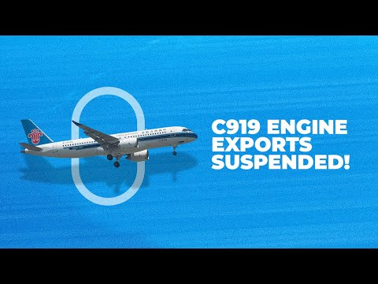

【这会扼杀C919吗？美国暂停向中国商飞出售发动机】
Summary: The US has suspended sales of critical technologies, including jet engines for COMAC's C919, in response to China's mineral export restrictions, potentially impacting the C919 program, though China is developing its own engine.
摘要： 美国暂停向中国商飞出售包括C919发动机在内的关键技术，以回应中国的矿产出口限制，这可能影响C919项目，但中国正在自主研发发动机。

⏱️ Estimated Reading Time: 5 min
On May 28th, the New York Times reported that the United States had suspended some sales to China of critical US technologies.
5月28日，《纽约时报》报道称，美国已暂停向中国出售部分关键技术。
This is said to include sales related to jet engines for Chinese state-owned aerospace manufacturer Comarmac.
据报道，这包括与中国国有航空航天制造商中国商飞相关的喷气发动机销售。
What are the details of this sudden suspension and what does it mean for the C919?
这一突然暂停的具体细节是什么？对C919意味着什么？
Let's find out for today's video.
让我们在今天的视频中一探究竟。
The Comac 919 is often compared to the Boeing 737 and Airbus A320 family.
中国商飞C919常被与波音737和空客A320系列相提并论。
It's a short to mediumh hall narrowbody airliner designed and produced by China.
这是中国设计和生产的一款短程至中程窄体客机。
But while much of the aircraft is built in China, its power plants are notably from CFM, a joint venture between Americans GE and Saffron of France.
但尽管该飞机大部分在中国制造，其动力装置却来自CFM，这是美国通用电气与法国赛峰的合资企业。
C919 utilizes the CFM Leap 1C, a variant of the CFM Leap family, where Airbus jets use the 1A, while 737 Max aircraft use the 1B.
C919采用CFM Leap 1C发动机，这是CFM Leap系列的一个变体，空客飞机使用1A，而737 Max飞机使用1B。
However, citing two people familiar with the matter, the New York Times reports that the suspension of these CFM engines is a response to China's recent restriction on exports of critical minerals to the United States.
然而，《纽约时报》援引两位知情人士的话称，暂停这些CFM发动机是对中国近期限制向美国出口关键矿物的回应。
The Times adds that the US government had also suspended some licenses that allowed US firms to sell products and technology to come to develop its C919 aircraft.
《纽约时报》补充说，美国政府还暂停了一些允许美国公司向中国商飞出售产品和技术以开发C919飞机的许可证。
According to one person familiar with the matter, the US Commerce Department told Reuters in a statement that it was reviewing exports of strategic significance to China, saying, "In some cases, the Department of Commerce has suspended existing export licenses or imposed additional license requirements while the review is pending."
据一位知情人士透露，美国商务部在给路透社的一份声明中表示，正在审查对华战略意义出口，称“在某些情况下，商务部已暂停现有出口许可证或在审查期间施加额外许可证要求”。
A spokesperson for the Chinese embassy in Washington told Reuters, "China firmly opposes the US's overstretching the concept of national security, abusing export controls, and maliciously blocking and suppressing China."
中国驻华盛顿大使馆发言人告诉路透社：“中国坚决反对美国过度延伸国家安全概念、滥用出口管制、恶意封锁和打压中国。”
So, what does this mean for the C919 program?
那么，这对C919项目意味着什么？
Well, much of the language at the moment sounds temporary.
目前的大部分措辞听起来是暂时的。
Be up to the leaders of China and the United States to work out a deal.
这取决于中美两国领导人能否达成协议。
Something that seems difficult to predict at the moment these days.
这在当前似乎难以预测。
It feels like trade tensions could increase at any time, but they could also ease the very next day.
感觉贸易紧张随时可能升级，但也可能第二天就缓和。
Without more engines, the C919's being produced will be sitting on the ground.
如果没有更多发动机，正在生产的C919将停飞。
But while the C919 is currently only powered by the CFM Leap 1C, it looks like COMAC is doing its best to move away from this type of situation where a foreign government can essentially kill an entire aircraft program.
但尽管C919目前仅由CFM Leap 1C提供动力，中国商飞似乎正尽力摆脱这种外国政府可能扼杀整个飞机项目的局面。
As reported in March by the South China Morning Post, China has been working on a homegrown turboan engine for its C919.
据《南华早报》3月报道，中国一直在为C919研发国产涡轮发动机。
Furthermore, indications are that this development has been progressing well in recent trials.
此外，有迹象表明，这一研发在最近的试验中进展顺利。
This is at least according to experts and top executives from Aerero Engine Corporation of China, AECC.
这至少是根据中国航发（AECC）专家和高管的说法。
The CJ1000 engine is in trial runs and it fared better than my most optimistic expectations.
CJ1000发动机正在进行试运行，其表现比我最乐观的预期还要好。
A Chinese aviation expert stated amid a battle with the West for technological supremacy.
一位中国航空专家在中西方技术霸权之争中表示。
This same individual said at the time that the engine success will exemplify China's supply chain resilience.
同一位人士当时表示，发动机的成功将体现中国供应链的韧性。
What do you think of this latest development?
您对这一最新进展有何看法？
Let us know by leaving a comment.
请在评论区告诉我们。
In addition to our daily YouTube videos, Simple Flying publishes over 150 articles every week.
除了每日的YouTube视频外，Simple Flying每周还发布150多篇文章。
If you're looking for the latest aviation news and insights, visit simpleflying.com.
如果您想了解最新的航空新闻和见解，请访问simpleflying.com。